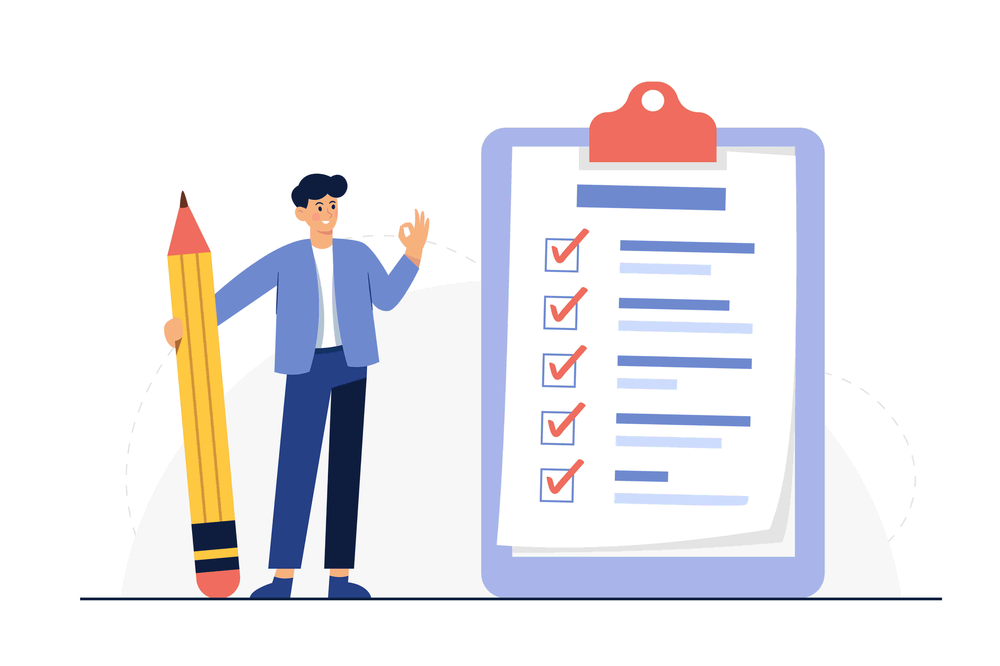

<section [innerHTML]="howToOrder"></section>


<!-- <div class="how-to-order-container">
  <div class="" style="max-width: 1300px;">
    <h1 style="font-size: 40px;">How To Order?</h1>
    <h3 style="margin-top: 10px;">A Streamlined Order Process</h3>
    <p style="margin-top: 10px;">Placing an order with us is a breeze! Go to our website and navigate to the order page.</p>
    <div class="steps-container">
      <div class="step-left">
        
      </div>
      <div class="step-right">
        <ul class="tabs">
          <li [class.active]="activeTab === 'need'" (click)="setActiveTab('need')">Tell Us Your Need</li>
          <li [class.active]="activeTab === 'freepayment'" (click)="setActiveTab('freepayment')">Worry Free Payment</li>
          <li [class.active]="activeTab === 'contactpm'" (click)="setActiveTab('contactpm')">Contact With PM</li>
          <li [class.active]="activeTab === 'delivered'" (click)="setActiveTab('delivered')">Get Your Order</li>
        </ul>
        <div class="tab-content" *ngIf="activeTab === 'need'">
          <h3>Tell us what you need</h3>
          <p>We are enthusiastically waiting for your order! Provide the necessary details for your dissertation, specific instructions, and any reference materials that are relevant to your research.</p>
        </div>
        <div class="tab-content" *ngIf="activeTab === 'freepayment'">
          <h3>Worry-free payment</h3>
          <p>We are just a click away! Use our secure payment gateway to process the payment for your order. We ensure the confidentiality of your payment information. Once your payment is processed, we will send you a confirmation email with the order details.</p>
        </div>
        <div class="tab-content" *ngIf="activeTab === 'contactpm'">
          <h3>Get in touch with your project manager</h3>
          <p>We are eager to communicate with you! Once your payment is processed, we will send you a confirmation email with the order details. Our team will then assign a qualified writer who specializes in your field of study. You can interact directly with your assigned writer through our messaging system. Provide any additional instructions, clarifications, or insights you want to be incorporated into your dissertation. Maintain open communication to ensure that the writer understands your requirements.</p>
        </div>
        <div class="tab-content" *ngIf="activeTab === 'delivered'">
          <h3>Get your draft delivered</h3>
          <p>Let's see our final product! Once your dissertation is completed, we will send the final document in the agreed-upon format to your email address. Take the time to review the delivered essay. If you require any revisions or adjustments, you can request them within the designated revision period. We offer free revisions to ensure your satisfaction with the final product!</p>
        </div>
      </div>
    </div>
  </div>
</div> -->


<!-- <div class="how-to-order-container">
    <h2>How it works</h2>
    <p>Follow these 3 simple steps to get started. Or contact our support agent for guidance.</p>
    <div class="steps-container">
      <div class="step-left">
        
      </div>
      <div class="step-right">
        <ul class="tabs">
          <li class="active">Submit instructions</li>
          <li>Track progress</li>
          <li>Get your work</li>
        </ul>
        <div class="tab-content">
          <h3>Submit instructions</h3>
          <p>Fill out a short order form with the instructions provided by your tutor or contact us via live chat and specify the assignment details. Then, we’ll quickly match you with the right expert and generate an account for you. You can use it to track order progress, upload additional instructions, send direct messages to the expert and support team, etc.</p>
          <div class="premium-quality">
            
            <p><strong>Premium quality</strong><br>All papers are tailored from the ground up to ensure they will meet your specific requirements and pass any plagiarism checker, including Turnitin.</p>
          </div>
        </div>
      </div>
    </div>
</div> -->
  